The Trojan Horse

Creative M&A Journalism
and Personal Blog
Writing has always been where I find my peace. From childhood stories to strategic planning, having the space to break down complex ideas onto a page means everything to me. But as I look at our generation of students, I see a heavy reliance on consensus narratives that slowly dulls our intellectual curiosity.
The Trojan Horse was built to challenge this complacency. By presenting the high-stakes world of M&A as the outer shell, the true objective is to deliver sharp, critical thinking hidden inside. It is a vehicle meant to bypass the noise and wake up our inherent desire to ask why.
I built this to refine my voice and present my analysis as art.
My Name is Francis Ruan and I welcome you to the Trojan Horse.